Productivity App (writeup in progress...)
Introduction and video
My mission this month was to design and implement a simple productivity app that encourages the user to monitor outcomes rather than specific tasks.
The video introduction can be found here.
Designing in Figma for SwiftUI
There are a few important reasons for why I am super excited to build this app in SwiftUI.
- There are some amazing Swift charting packages available but it used to take me ages to create the exact charts that I wanted. WWDC's announcement of Swift Charts is a real game changer.
- The last time I used weather data in an app was 2 years ago where I worked with 3 weather APIs in UIKit. Everything worked out but I didn't get very far and never published the app. I cannot wait to get back into weather data again using Apple's weather API (and this time with SwiftUI).
- I can finally practice Core Data again (it has been 2 years)
- I might finally learn how to use Cloud Kit
High Fidelity MVP Screens
For personal projects, I usually prefer to design directly in Xcode. This will be the first time that I attempt to hand over a design to "myself" from Figma.
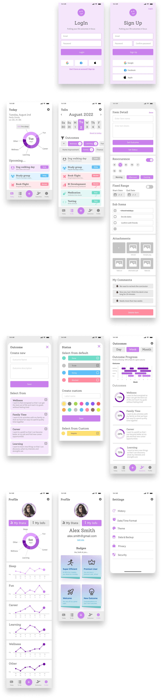Background
I really wanted to design a productivity tracking app that encourages the user to focucs on the big picture of their life, but in a very simple way. Rather than focusing on meeting exact agendas each day, they would focus on wheather or not they are achieving their outcomes or long term goals for, say for example, “fun”, “learning”, “wellness” or “helping others”, as a few exampels. Deadlines and alerts would still exist but they are not the main focus of the user experience.
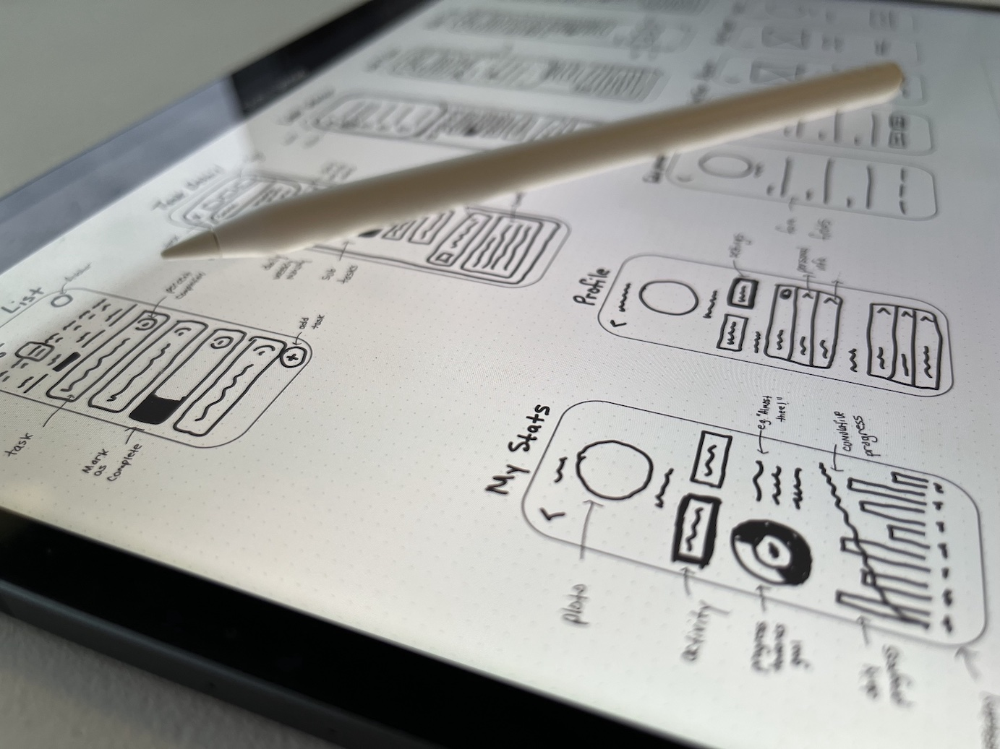UI Research
Analysis
I started by performing an analysis of current productivity apps and identifying the design pattern categories used. The most common categories I identified were
- gathering input - on the task name and additional details
- data management - to display task lists
- navigation - to access task status, days of the week or times of the day
User Stories
I then documented a list of user stories provided and generated new ones based on some light research with a few productivity app users. 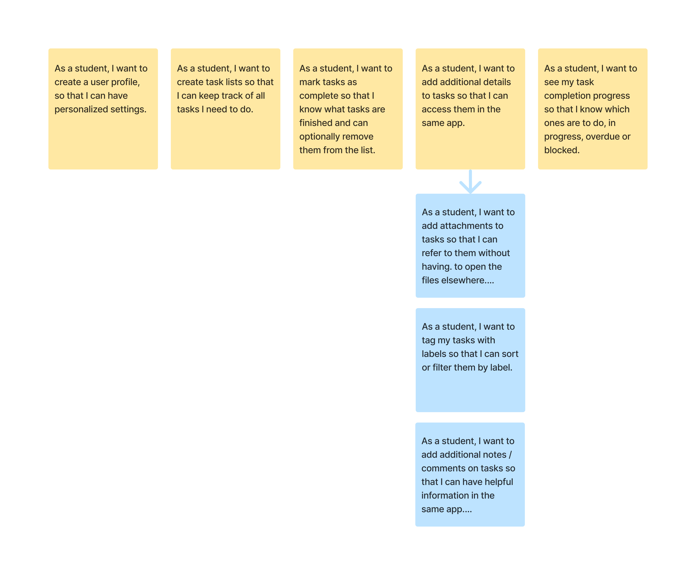Ideation
For each user story, I performed a search on Dribble, Mobbin, pttrns and the App store for design patterns used to help achieve each user goal. 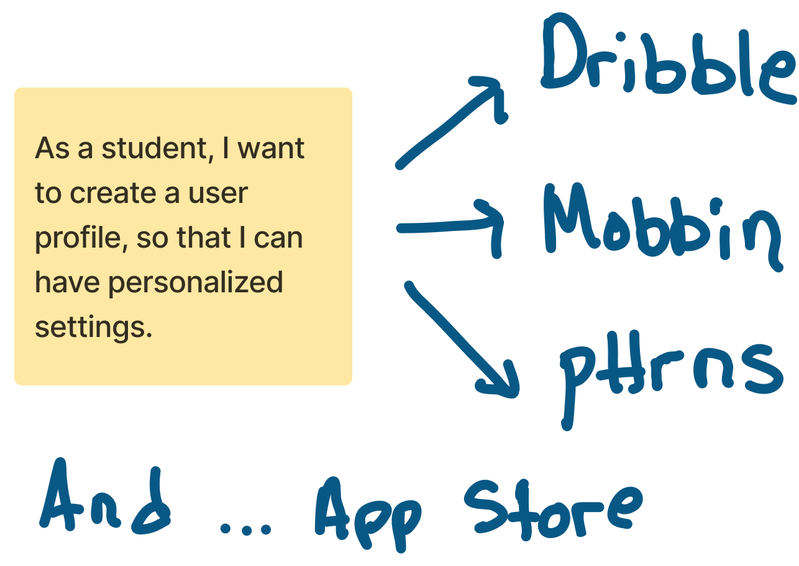Low-Fidelity Sketching
For each user story, and with inspiration from the design patterns on Dribble, pttrns and mobbin, I sketched the low fidelity screens in Figjam. Note: this particular design, intentionally, does not include the user flow.
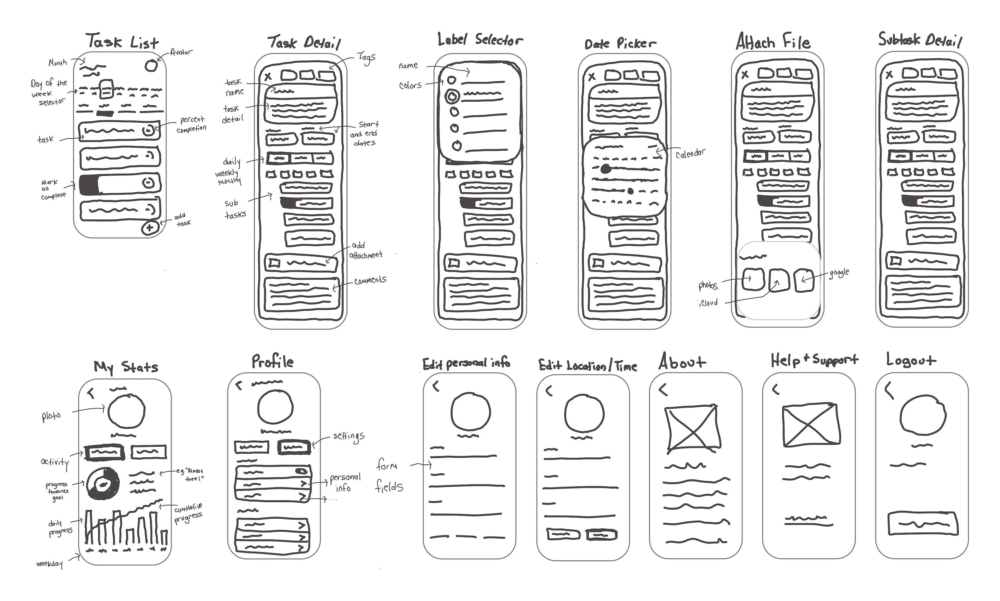Digital Low-Fidelity Wireframes
I used Balsamiq to design the low-fidelity digital wireframes and confirm the most basic flows.
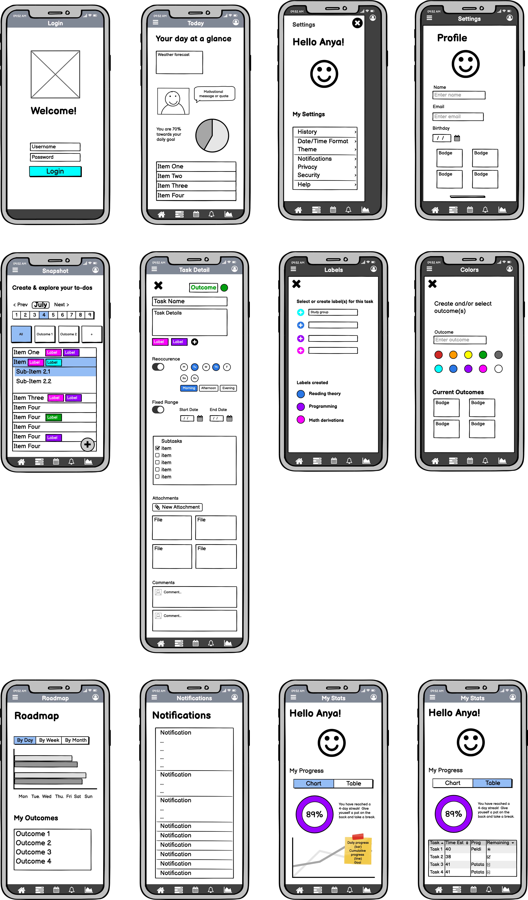Low-Fidelity Wireframes with grid
Grid System
I used a 10-pt grid with 6 columns and 20pt margins. My reason for selecting 10 points is because it is more efficient to work with figma. In figma one can use the shift key to move an element 10pts at a time.
Gray Boxing
The UI elements are drawn with simplified gray boxes of approximate size. The boxes are not the exact size but allowed me to validate the layouts with the grid system within a reasonable time.
Icon Design
Ideation and first sketches
I wanted to create custom icons for the bottom navigation and started the process by first identifying the purpose of each icon. I then quickly sketched three variations of each icon that I wanted to experiment with.
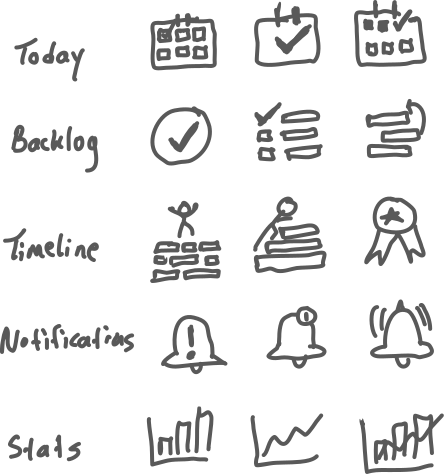Icons drawn in Figma
This is the first final digital version of the tab bar icons. The profile section contains both profile information and statistics so I thought to combine those two concepts into one icon as a face and a bar chart. For the final MVP tab bar, I reverted back to a simple face for the profile icon after receiving feedback from a confused user who was not able to associate the shape with the contents. 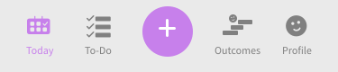 I am still working to get the line thicknesses, angles, and corner radii consistent in order to make the icon set feel more like a family.Basic UI components
Conversion to iPhone 8 and Small Android
According to Mobile Screen Resolution Stats Worldwide for June 2021 to June 2022, the most common screen size is the iPhone 8 (375 x 667) and Small Android Small (360 x 840). I therefore converted my artboards to iPhone 8 and adjusted the UI components.
Let's take a break
I ordered the most amazingly comfortable oversized pullover online. This was great for those late nights I spent naming, grouping and ordering layers. Even better, the color is ideal for spilling beer and snacks on without worrying about them leaving a permanent stain. If interested, please connect with me on social media to share with me what you do while you name layers :)
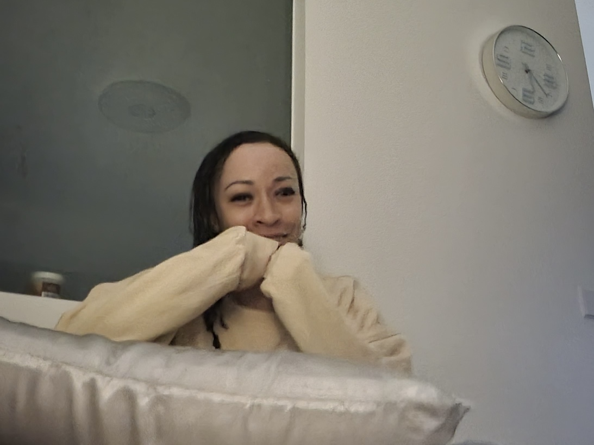Simplifying design
The current interface was quite dense and heavy so I made some changes, starting with removing the top navigation bar and integrating the user profile into the navigation bar.
Emotional inspiration
Preparation for high-fidelity
In order to prepare for high-fidelity, I started a moodboard for texture, colors, typography, images and wording. The themes I had in mind were:
- Fun
- Focused
- Inspirational
Typography
Based on the themes fun, focused and inspirational, I did some research and selected Alegreya for the headers and Source Sans Pro for the body. I used type-scale.com and the Apple Human Interface guidelines to select preliminary typeface sizes. In type-scale.com I used the Minor Third Scale and selected a base size of 19 for Alegreya (because it runs slightly small) and 18px for Source Sans Pro. I reduced the line height for Source Sans Pro to 110%.
Oh and by the way, even though I am speaking in first person, I actually had nothing to do with any of this. It was a frog.
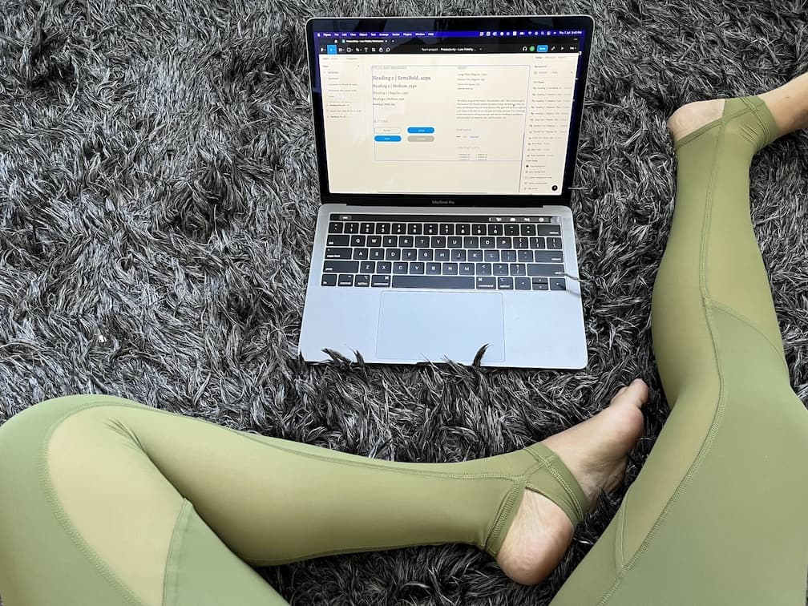Typeface and Fonts
I later changed the heading typeface to a more modern Serif called Solway. I really liked the Medium font but after comparing my app with other recent apps, I decided that regular was more appropriate.
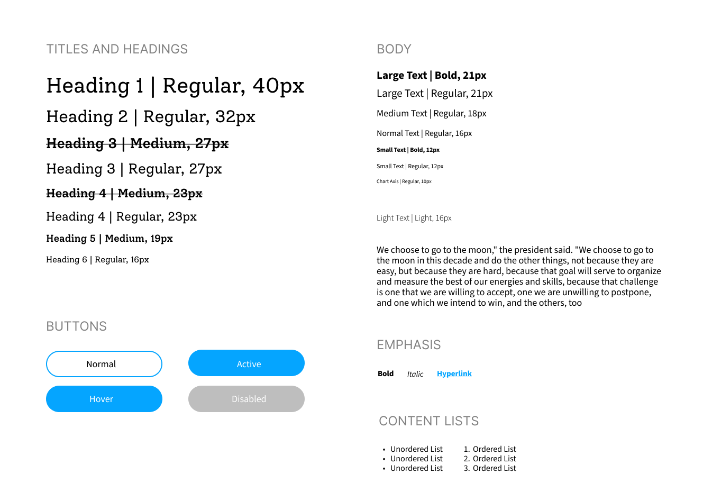Screens with Typography applied
So here they are, the medium fidelity screens before the next step which is adding color, texture and emotion.
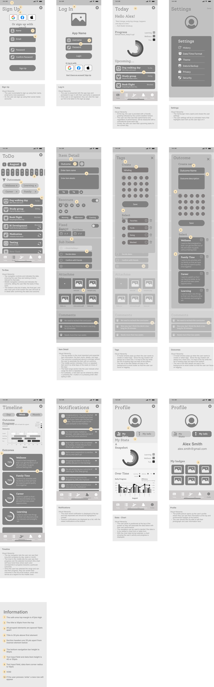Colors
Color choices
I chose purple for the primary color to use for the call to action and data visualizatoins. Color ramps can be difficult to interpret so I took care in using annotations to directly label each category. The remaining colors were selected to represent the default task status options which are 'to do', 'doing', 'done' and 'blocked'.
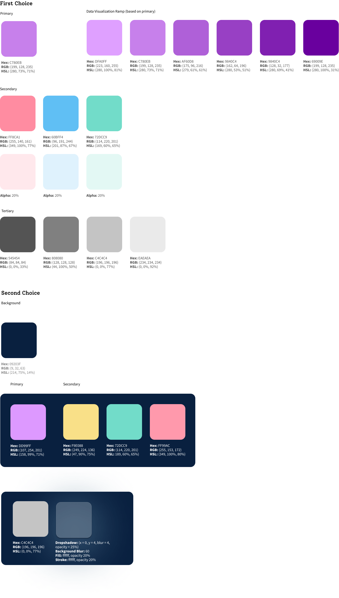Color experiments
I really like the dark theme and plan to use one that follows the device settings. For this project though I am designing and building for light theme first.
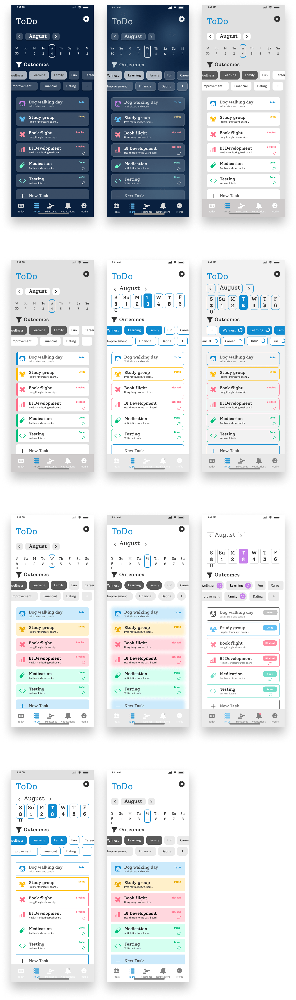Final MVP Design
Things I would have done better
- The Today screen, particularly near the weather report at the top, could be a lot more interesting.
- The data visualizatoins could be more simple and self-explanatory.
- The item details could be broken down into smaller separate chunks.
- The badges, while they should look shiny, should be more harmonious the rest of the user interface.
- Only the tab bar icons have been custom designed, the rest of the icons throughout the UI need to be custom designed as a family.
- The copy can be greatly improved to be more meaningful, concise and self-explanatory.